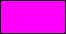

Anexo: Manejo de colores
En GameMaker: Studio, los colores de dibujo se representan a partir de números reales de 3 bytes
que forman los componentes azul, verde y rojo respectivamente gracias a cada uno de dichos bytes. Cada uno
de los componentes de color mencionados anteriormente (BGR) puede poseer un valor que va desde 0 a 255.
Por ejemplo, el color rojo (rojo: 255, verde: 0, azul: 0) se representa con el número 255, pues éste en
binario se escribe como:
| 00000000 |
00000000 |
11111111 |
| Azul |
Verde |
Rojo |
|
0
|
0
|
255
|
El color azul (rojo: 0, verde: 0, azul: 255), por otra parte, se representa con el número real 16711680,
pues éste en binario se escribe de la siguiente manera:
| 11111111 |
00000000 |
00000000 |
| Azul |
Verde |
Rojo |
|
255
|
0
|
0
|
De esta manera, se pueden combinar los componentes de color para llegar al número real que lo representa,
significando esto que en GameMaker: Studio es soportado un rango de colores que va desde 0 hasta
16777215 (color blanco), que en binario se representa así:
| 11111111 |
11111111 |
11111111 |
| Azul |
Verde |
Rojo |
|
255
|
255
|
255
|
Creación de colores
Teniendo en cuenta lo anterior, existen tres formas principales de crear un color a partir de sus componentes:
1. Notación hexadecimal
La primera forma es utilizando la notación hexadecimal admitida por GameMaker: Studio, que consta de
usar el signo $ para escribir un número como valor hexadecimal.
Gracias a esta notación, la manera más simple de crear un color a partir de sus componentes RGB es ésta:
color = $BBGGRR;
Donde BB es el componente azul, GG es el componente verde, y RR es el rojo.
Estos tres componentes deben escribirse como números hexadecimales. Por ejemplo:
color = $FF00FF;
Este código crearía un color con los siguientes componentes:
En este caso, este color vale 16711935, siendo equivalente a la constante de color c_fuchsia.

2. Operaciones a nivel de bits
La segunda forma de obtener un color a partir de sus componentes RGB es utilizando los operadores bitwise
que provee GameMaker: Studio. Estos operadores permiten modificar los números reales tratándolos como
binarios.
Para crear colores de esta forma, necesitaremos sólo dos operadores: El left shift y el OR binario.
El primer operador añade un número determinado de ceros a la derecha del valor binario del número dado.
Por ejemplo:
valor = 8 << 2;
En este ejemplo, la variable valor resultará con el valor de 32 por la siguiente razón:
El número 8 en binario se representa como:
1000
Y si realizamos la operación 8 << 2, estaremos añadiendo dos ceros a la derecha de este valor binario,
resultando en:
Este valor binario equivale al número real 32.
Ahora bien, el operador OR a nivel de bits (|) compara las cifras de dos números (en binario) y
efectúa la operación OR (1 or 1 = 1, 1 or 0 = 1, 0 or 0 = 0) con cada
cifra correspondiente. Por ejemplo:
numero = 14 | 24;
El número 14 en binario es 1110, y el número 24 es
10100. Esta operación, en binario, podría representarse así:
Veamos cómo se pueden aplicar estas dos operaciones para obtener el valor de un color a partir de sus componentes RGB.
rojo = 30; //En binario es 11110
verde = 128; //En binario es 10000000
azul = 255; //En binario es 11111111
color = (azul << 16) | (verde << 8) | rojo; //El resultado es 16744478
Esta operación se puede representar así:
| 11111111 |
00000000 |
00000000 |
or |
| 00000000 |
10000000 |
00000000 |
or |
| 00000000 |
00000000 |
00011110 |
|
|
11111111
|
10000000
|
00011110
|
(En decimal: 16744478)
|
|
Azul
|
Verde
|
Rojo
|
|
255
|
128
|
30 |
El resultado en decimal es 16744478.
3. Funciones especializadas
También es posible obtener un color a partir de sus componentes utilizando las siguientes funciones:
make_colour_rgb()make_colour_hsv()
Descompocisión de colores
En ocasiones es necesario realizar el proceso inverso a la creación de un color: Obtener los valores que
lo componen.
1. Operaciones a nivel de bits
Este método nos permite obtener los valores rojo, verde y azul de un color a partir de las operaciones
binarias AND y right shift.
El operador AND a nivel de bits es idéntico al AND convencional, sólo que compara las cifras correspondientes
de dos números binarios. Por ejemplo:
numero = 13 & 22; //13 en binario es 1101. 22 en binario es 10110.
//numero = 4
Esta operación se puede apreciar gráficamente de la siguiente manera:
El número 100 base 2 en decimal es 4.
Veamos el segundo operador: Shift right (>>). Éste remueve una cantidad determinada de cifras de
un número binario. Por ejemplo:
numero = 102 >> 5; //102 en binario es 1100110.
//numero = 3
Veamos gráficamente esta operación:
| 1100110 | >> | 5 |
|
11-----
|
|
0000011
|
El resultado es 3. Pues 11 base 2 es 3 en decimal.
Ahora bien, ¿cómo aplicamos estos operadores para descomponer un color?
Requeriremos de dos pasos:
El primer paso es "limpiar" el número usando el operador AND, para obtener sólo la parte deseada del color
(rojo, verde o azul).
color = 13515239; //13515239 en binario es
rojo_parte1 = color & 255; //255 en binario es 110011100011100111100111
//rojo_parte1 = 231
verde_parte1 = color & 65280; //65535 en binario es 1111111100000000
//verde_parte1 = 14592
azul_parte1 = color & 16711680; //16711680 en binario es 111111110000000000000000
//azul_parte1 = 13500416
Estas operaciones se pueden ver gráficamente así:
rojo_parte1
| 11001110 | 00111001 | 11100111 | and |
| 00000000 | 00000000 | 11111111 |
|
00000000
|
00000000
|
11100111
|
(En decimal: 231)
|
| |
(Rojo) |
verde_parte1
| 11001110 | 00111001 | 11100111 | and |
| 00000000 | 11111111 | 00000000 |
|
00000000
|
00111001
|
00000000
|
(En decimal: 14592)
|
|
(Verde) |
|
azul_parte1
| 11001110 | 00111001 | 11100111 | and |
| 11111111 | 00000000 | 00000000 |
|
11001110
|
00000000
|
00000000
|
(En decimal: 13500416)
|
| (Azul) |
|
|
Los números en rojo son los bytes que equivalen a 0... El valor rojo tiene dos bytes a la izquierda,
lo cual no afecta en nada su valor real (231 = 00231). Sin embargo, los valores verde y azul tienen uno
y dos bytes a la derecha respectivamente, haciendo que el valor real de éstos aumente.
Debido a esto, llegamos al paso dos: Eliminar 8 y 16 ceros a la derecha de los valores verde y azul
respectivamente, utilizando el operador shift right.
color = 13515239; //13515239 en binario es
rojo_parte2 = color & 255;
//rojo_parte2 = 231
verde_parte2 = (color & 65280) >> 8;
//verde_parte2 = 57
azul_parte2 = (color & 16711680) >> 16;
//azul_parte2 = 206
Algo interesante, es que podemos ahorrarnos el operador AND para obtener el valor azul, utilizando sólo
el shift right, pues este número no tiene bytes diferentes de 0 a la izquierda.
color = 13515239; //13515239 en binario es
rojo = color & 255;
//rojo = 231
verde = (color & 65280) >> 8;
//verde = 57
azul = color >> 16;
//azul = 206
2. Funciones especializadas
Para facilitar este trabajo, GameMaker: Studio incluye una serie de funciones que permiten obtener
los componentes RGB y HSV de cualquier color.
colour_get_red()colour_get_green()colour_get_blue()colour_get_hue()colour_get_saturation()colour_get_value()